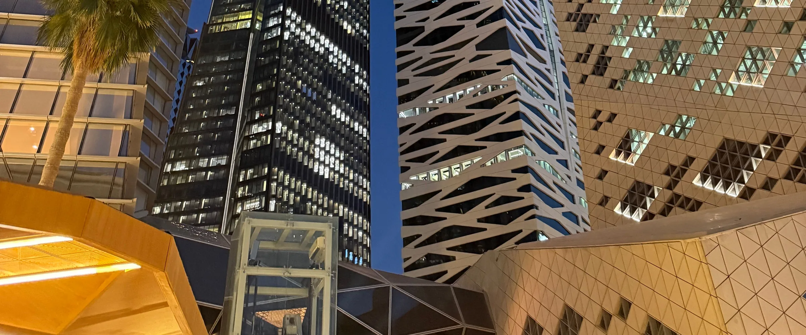

Practice 03
Capital follows structures that are bankable, Shariah-compliant and clear about risk.
In short
FINA. is HAYKALAH’s financial and capital structuring practice. It designs Sukuk, funds, joint ventures, securitizations and bank facilities, and prepares the models and documents that lenders and investors rely on. It serves issuers, banks, family offices and government entities that need capital against real assets. No structure is final until a Shariah board approves it, and regulated activities are executed through appropriately licensed partners.
What we do
Sukuk structures based on Ijara, Istisna’a, Musataha and Wakala.
Asset-backed securitization and off-balance-sheet vehicles.
Debt advisory: banking documents, bank processes and a side-by-side comparison of offers.
Fund structures and term sheets, with each fund set up and managed by a CMA-authorised manager.
Joint-venture and M&A structuring, supported by valuation and due diligence.
Tokenization readiness: proofing checklists, data rooms and screening bands.
Financial models of record and information memoranda.
How we create value
-
 01
01Innovation
We design the Shariah contract, the vehicle and the tranches from the asset itself, from Sukuk based on Ijara, Istisna’a, Musataha and Wakala to a stadium precinct Sukuk framework (2026, a proposal with no mandate).
-
 03
03Optimization
We approach banks or investors on one basis and compare offers side by side, as in the 2022 Holy Sites process, where offers from five banks were compared and one facility recommended.
How we work
-
01
Screen the asset
We test its cash flows against bands such as occupancy and debt-service cover before any structure is chosen.
-
02
Choose the contract and the vehicle
The Shariah contract, the SPV, the issuer per asset and the tranches follow from the asset, not the other way round.
-
03
Build the model and the documents
One model of record, the banking document, the information memorandum and the term sheet.
-
04
Secure the approvals
The Shariah board of the issuer, fund or bank reviews the structure, and a CMA-authorised institution is engaged for any regulated step.
-
05
Run the process and monitor
Banks or investors are approached on one basis, and the data room stays live after closing.
Proof from the record
| Year | Engagement | HAYKALAH role | Status |
|---|---|---|---|
| 2022 | Bank financing process for over SAR 1bn of tents, water and power works at Mina and Arafat | Debt adviser to a Holy Sites master developer; offers from five banks compared and one facility recommended | Facility files signed; recorded in HAYKALAH filesEvidence A: signed or outcome on file |
| 2010 | SAR 186m raised by private placement in five weeks for a new 100-bed hospital in Jeddah | Lead financial adviser: feasibility study, market research and valuation | Closed June 2010; recorded in HAYKALAH filesEvidence A |
| 2025 | Sukuk and tokenization readiness for three income-producing assets in Riyadh: a proofing checklist, data-room design and screening bands (occupancy above 85%, debt-service cover of at least 1.20x) | Structuring adviser | Early stageEvidence B: work product on file |
| 2026 | Stadium precinct Sukuk framework: Musataha land rights, Istisna’a during construction, then Ijara or Wakala-Ijara, with one issuer per stadium across seven precincts for 2034 | Concept originator | Proposal; no mandateEvidence B |
The archive census counts 55 banking, capital-markets and Sukuk engagements, 2004–2026. All figures indicative. Stadium framework figures are withheld until the source documents are reconciled. Clients are not named until they consent.
Structures we use
Who we work with
- Banks and financial institutionsthat need structured, documented requests
- Sovereign and government entitieswith Sukuk frameworks for public assets
- Family offices and trustsraising finance against family-owned assets
- Founders and private investorspreparing a company for capital
- International companiesfunding a joint venture or project in the Kingdom
Questions
How are Sukuk different from conventional bonds?
Sukuk give holders a share in an underlying asset or its returns. The return comes from the asset, for example rent under an Ijara, rather than from interest on a loan.
What is Sukuk al-Ijara?
A lease-based Sukuk. An SPV holds the leased asset on behalf of the Sukuk holders, and the rent paid by the lessee funds the periodic distributions.
Who approves a structure under Shariah?
The Shariah board of the issuer, fund or financial institution involved. Where a client has none, HAYKALAH can arrange an independent Shariah board for the transaction. No structure is final until that approval is given.
Is HAYKALAH regulated by the Capital Market Authority?
HAYKALAH is not an Authorised Person of the Capital Market Authority. Arranging, dealing, managing or advising on securities, and establishing or managing an investment fund, are carried out by a CMA-authorised institution engaged for the transaction.
Bring us the asset and the funding need. We can start under an NDA.